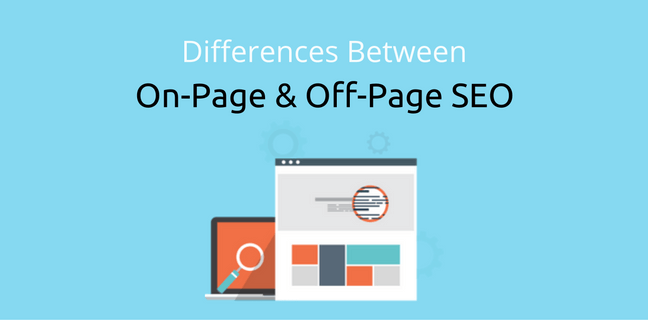

Difference between ON-PAGE SEO and OFF-PAGE SEO
On-page SEO helps you to optimize your website to make it good for all search engines. Off-page SEO helps you to get the leading position in search engines among other websites. It pays attention to aspects of other websites to make your site the best one.
Briefly discuss the following SEO Guides for ON-PAGE Technique.
- USE SEO-FRIENDLY URLS
- START TITLE WITH KEYWORD
- ADD MODIFIERS TO YOUR TITLE
- WRAP YOUR BLOG POST TITLE IN AN H1 TAG
- DAZZLE WITH MULTIMEDIA
- WRAP SUBHEADINGS IN H2 TAGS
- DROP KEYWORDS IN FIRST 100 WORDS
- USE RESPONSIVE DESIGN
- USE OUTBOUND LINKS
- USE INTERNAL LINKS
- BOOST SITE SPEED
- SPRINKLE LSI KEYWORDS
- IMAGE OPTIMIZATION
- USE SOCIAL SHARING BUTTONS
- POST LONG CONTENT
- BOOST DWELL TIME
Google has stated that the first 3-5 words in a URL are given more weight.So make your URLs short and sweet.And always include your target keyword in your URL.
The title tag is the most important on-page SEO factor.In general, the closer the keyword is to the beginning of the title tag, the more weight it has with search engines.
Using modifiers like “2017”, “best”, “guide”, and “review” can help you rank for long tail versions of your target keyword.
The H1 tag is your “headline tag”. Most CMS’s (like WordPress) automatically add the H1 tag to your blog post title. If that’s the case, you’re all set.But some themes override this setting. Check your site’s code to make sure your title gets the H1 love it deserves.
Text can only take your content so far. Engaging images, videos and diagrams can reduce bounce rate and increase time on site: two critical user interaction ranking factors.
Include your target keyword in at least once subheading and wrap it in an H2 tag.
Your keyword should appear in the first 100-150 words of your article.
Google started penalizing mobile unfriendly sites in 2015. And they’re likely crack down even more in the future. If you want to make your site mobile-friendly, I recommend Responsive Design.
Outbound links to related pages helps Google figure out your page’s topic. It also shows Google that your page is a hub of quality info.
Internal linking is SO money. Use 2-3 in every post.
Google has stated on the record that page loading speed is an SEO ranking signal. You can boost your site speed by using a CDN, compressing images, and switching to faster hosting.Make sure your site doesn’t take more than 4 seconds to load: MunchWeb found that 75% of users wouldn’t re-visit a site that took longer than 4 seconds to load.
LSI keywords are synonyms that Google uses to determine a page’s relevancy (and possibly quality). Sprinkle them into every post.
Make sure at least one image file name includes your target keyword (for example, on_page_SEO.png) and that your target keyword is part of your image Alt Text.
Social signals may not play a direct role in ranking your site. But social shares generate more eyeballs on your content.And the more eyeballs you get, the more likely someone is to link to you. So don’t be shy about placing social sharing buttons prominently on your site.In fact, a study by BrightEdge found that prominent social sharing buttons can increase social sharing by 700%.
The SEO adage “length is strength” was supported by our industry study which found that longer content tends to rank significantly higher on Google’s first page.
If someone hits their back button immediately after landing on a page, it tells Google in black-and-white: this is low quality page.That’s why Google uses “dwell time” to size up your content’s quality. Increase your average dwell time by writing long, engaging content that keeps people reading.
Briefly discuss the following SEO Guides for OFF-PAGE Technique.
- SOCIAL MEDIA ENGAGEMENT
- SOCIAL BOOKMARKING SITES
- FORUM SUBMISSION
- ARTICLE SUBMISSION
- QUESTION AND ANSWER
- VIDEO SUBMISSION
- IMAGE SUBMISSION
- INFOGRAPHICS SUBMISSION
- DOCUMENT SHARING
A major Off-page SEO technique is social media engagement. If you want to make your business, website or blog popular, engage with people on multiple social media platforms. Social media presence will help grow your business and also help you get more back links.
Social bookmarking sites are one of the best platforms to promote your website. When you bookmark your webpage or blog post on popular social bookmarking websites, you gain high traffic to your webpage or blog.
Participate in search forums which are related to your website and business and make a connection with that community. Reply to threads, answer people’s questions and give your suggestions and advice. Make use of “Do-Follow” forums.
Submit your articles in a high PR article submission directory. You can also give links to your website. Make sure your content is unique and of high quality. Low quality content and content that has more keyword stuffing might get rejected. Choose the correct category and give a good title to your content.
One of the best ways you can get high traffic is from question and answer websites. Join high PR question and answer sites and search for questions related to your business, blog or website and give clear answers to these questions. Give a link to your website which will help in bringing you more visibility.
If you want to make your videos popular, head to popular video submission sites. Give a proper title, description, tags and reference links. It is one of the more popular ways to get quality back links because all video submission websites have high PR.
If you want to make your videos popular, head to popular video submission sites. Give a proper title, description, tags and reference links. It is one of the more popular ways to get quality back links because all video submission websites have high PR.
Make creative infographics. These days, infographics are getting popular on the internet. Submit your infographics on infographics submission websites and give reference links to your webpage or blog. The image sizes differ with different websites.
Create attractive documents relating to your business or blog. The documents should have unique content and should be in either pdf or ppt formats. Submit these documents in the document sharing websites.